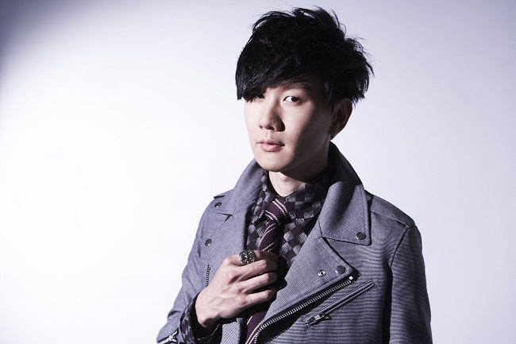

林俊杰
英文名:Wayne Lim Jun Jie，艺名：JJ
Lin，出生于1981年3月27日。新加坡华裔男歌手、词曲作家、音乐制作人、品牌潮牌衣服企业人士，曾拿下金曲奖最佳新人奖以及两届金曲奖最佳男歌手。
重要事件
- 2003年4月，林俊杰发表首张个人专辑《乐行者》并正式出道
- 2004年凭借歌曲《江南》而成名，并于同年5月8日获得第15届金曲奖之“最佳演唱新人奖”
- 2004年受邀与陈洁仪合作演唱新加坡国庆庆典主题曲《家》
- 2007年成立音乐制作公司“就是俊杰音乐”，负责单曲及专辑制作
- 2008年担任2008年北京奥运会火炬手
- 2009年获颁新加坡杰出青年奖
- 2010年担任新加坡青年奥运火炬手
- 2011年8月8日，签约华纳音乐
- 2013年发行《因你而在》专辑，内含《修炼爱情》一曲，并将之拍成动画微电影，以献给在胜安航空185号班机上遭遇空难的一位女性友人
- 2014年6月28日，凭借第十张个人专辑《因你而在》，获得第25届金曲奖最佳国语男歌手奖
- 2015年受邀演唱新加坡国庆庆典主题曲《Our Singapore》
- 2016年6月25日，凭借第十二张个人专辑《和自己对话》及其主打单曲《不为谁而作的歌》，获得第27届金曲奖最佳国语男歌手奖和最佳作曲人奖
- 2017年5月，歌曲《不为谁而作的歌》MV在YouTube网站达到一亿次观看次数，成为少数破亿的华语MV。同年12月，歌曲《修炼爱情》MV在YouTube网站亦达到一亿次观看次数，成为华语歌坛中第一位拥有两首破亿歌曲的歌手
- 除音乐领域外，林俊杰亦多元发展。2008年，他创立品牌“SMUDGE”，开始进军潮流服饰行业。2016年6月份，他考取了国际汽车联盟（FIA）证照，成为职业赛车手
- 2017年成立职业电子竞技队伍SMG战队，主要参与传说对决的赛事，并在2017年11月26日获得AIC传说对决世界冠军
- 2018年《伟大的渺小》获得大众的好评，更入围了金曲奖最佳男歌手等
- 2020年《幸存者·如你》推出便受到众好评，整部拍摄是在疫情期间所制，别具意义
- 2021年5月3日 林俊杰2018年在梦想的声音翻唱《输了你赢了世界又如何》于YouTube 网站达到一亿次观看次数，成为华语乐坛第一位live翻唱破亿的歌手
奖项
- 2003年第3届马来西亚金曲红人颁奖典礼－最有潜质新人奖
- 2004年年度十大中文金曲奖－全国最受欢迎中文歌曲奖银奖《江南》
- 2005年第5届全球华语歌曲排行榜颁奖典礼－年度二十五首金曲奖、最佳专辑奖《编号89757》、最受欢迎创作歌手奖、新加坡最佳杰出艺人奖
- 2006年第6届全球华语歌曲排行榜颁奖典礼－年度二十首金曲奖《曹操》、最受欢迎创作歌手奖
- 2007年第12届新加坡词曲版权协会颁奖礼－最佳本地歌手奖、最佳本地影剧歌曲奖《被风吹过的夏天》
- 2008年第13届新加坡词曲版权协会－最佳本地创作人奖
- 2009年北京流行音乐典礼（中歌榜）－港台年度最佳专辑奖《JJ陆》、年度金曲奖《小酒窝》
- 2010年第8届东南劲爆榜颁奖典礼－劲爆港台地区最佳唱作歌手奖、劲爆最佳专辑奖《JJ林俊杰_100天》
- 2011年第1届全球流行音乐金榜－年度最佳制作人奖《她说》、年度最佳创作歌手奖、新加坡电台1003推崇大奖、年度20大金曲奖(第几个100天)
- 2012年第10届台湾Hito流行音乐颁奖典礼－hito男歌手奖、hito最长寿专辑奖《她说》、hito年度华语歌曲奖《她说》
- 2013年新城国语力颁奖礼－新城国语力歌曲奖《修炼爱情》、新城国语力年度歌曲奖《零度的亲吻》、新城国语力年度专辑奖《因你而在》、新城国语力全球最受欢迎歌手大奖
- 2014年第01届城市至尊音乐盛典－年度20大金曲奖《修炼爱情》、年度至尊男歌手奖、平面传媒推荐年度最佳制作人奖、联盟台点播冠军王
- 2015年第5届全球流行音乐金榜－年度最佳制作人奖《新地球》、年度最受欢迎男歌手奖、UFM100.3推崇大奖、年度20大金曲奖《新地球》
- 2016年第14届MusicRadio中国TOP排行榜－港台地区年度最佳男歌手奖、港台地区年度最佳唱片奖《和自己对话》、年度金曲奖《不为谁而作的歌》
- 2018年Mnet亚洲音乐大奖最佳亚洲艺人奖
- 2020年2020 TMEA 腾讯音乐娱乐盛典— 年度最佳制作人、年度最佳港台男歌手 十大金曲《将故事写成我们》
作品
| 年份 |
专辑名 |
| 2003年 |
乐行者 |
| 2004年 |
第二天堂 |
| 2005年 |
编号89757 |
| 2006年 |
曹操 |
| 2007年 |
西界 |
| 2008年 |
JJ陆 |
| 2009年 |
100天 |
| 2010年 |
她说 |
| 2011年 |
学不会 |
| 2013年 |
因你 而在 |
| 2014年 |
新地球 |
| 2015年 |
和自己对话 |
| 2017年 |
伟大的渺小 |
| 2020年 |
幸存者 • 如你 |
生活照

生平
林俊杰于1981年3月27日生于新加坡。他的父亲林远翔是新加坡电信的董事，其祖先由厦门移居小金门，他的曾祖母则是来自安溪。据传是美国一家石油企业亚太区的负责人，现已退休。姑父是日本佳能集团总裁。他还有一个哥哥林俊峰，为瑞银集团亚太地区的副总裁。
林俊杰在完成兵役前，曾就读于静山小学、英华自主中学和圣安德烈初级学院。后放弃就读新加坡国立大学的机会，与海蝶音乐签下合约。并结识好友叶承轶。